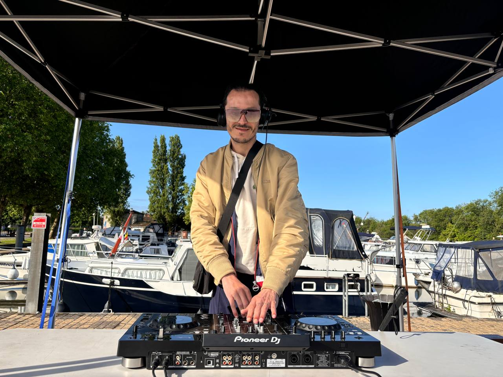
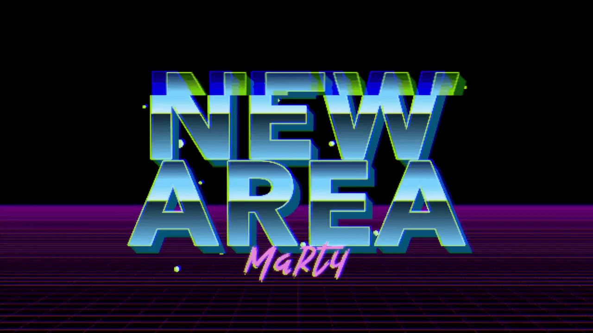

Événements privés
Mariages, anniversaires, soirées privées : une ambiance construite avec vous en amont.
Public, horaires, style musicalDJ, producteur & booking
Marty Blind DJ est DJ et producteur, 1er DJ non-voyant professionnel de France. Il apporte une prestation musicale énergique, professionnelle et hors du commun. L'objectif reste simple : faire danser votre public, créer une vraie ambiance et laisser un souvenir fort.

Formats
Mariages, anniversaires, soirées privées : une ambiance construite avec vous en amont.
Public, horaires, style musicalSoirées internes, conventions, afterworks, événements RSE ou inclusion avec une présence forte.
Cadre pro, message, énergieUn set club plus frontal, pensé pour tenir la piste et faire monter l'intensité.
Set, technique, public dansePréparer la prestation
Marty Blind DJ ne vient pas seulement lancer une playlist. La prestation se prépare avec votre contexte : type de public, lieu, horaires, moments clés, direction musicale et contraintes techniques. L'objectif est de créer une soirée fluide, vivante et vraiment adaptée à ceux qui seront dans la salle.
Mariage, entreprise, club ou scène : chaque contexte demande un rythme et une énergie différente.
Le set garde de la liberté, mais il part d'un cadre clair : public, références, moments forts et contraintes.
Lecture de la salle, transitions, énergie au micro si besoin : la prestation reste vivante et réactive.
Crédibilité
Le parcours de Marty ajoute une dimension unique à la prestation, mais le cœur du booking reste professionnel : préparation, adaptation au public, matériel, timing et qualité musicale.
Musique
Marty Blind DJ a aussi un profil artiste Spotify. Les extraits permettent de découvrir son univers de producteur avant de préparer une prestation DJ adaptée à votre public. C'est une facette importante de son profil : il ne se contente pas de mixer, il construit aussi son propre univers sonore.

Production originale de Marty Blind DJ, à écouter avant de préparer votre événement.
Un autre extrait pour découvrir son énergie de producteur.
Questions fréquentes
Mariage, soirée privée, club, événement d'entreprise, convention ou soirée à thème. Le plus important est de préciser le public et l'ambiance recherchée.
La demande doit indiquer le matériel déjà présent sur place. La réponse pourra ensuite préciser ce qui est fourni, à prévoir ou à louer.
Oui. Une playlist de références ou une liste de titres à éviter aide à préparer un set cohérent avec votre soirée.
Date, ville, horaires, type d'événement, nombre de personnes, matériel disponible, budget indicatif et contact organisateur.
Demande de devis
Plus la demande est précise, plus la réponse peut être rapide : date, ville, type d'événement, horaires, public attendu, contraintes techniques et budget indicatif.